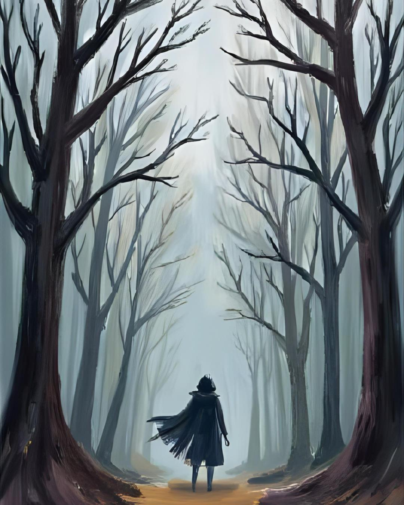
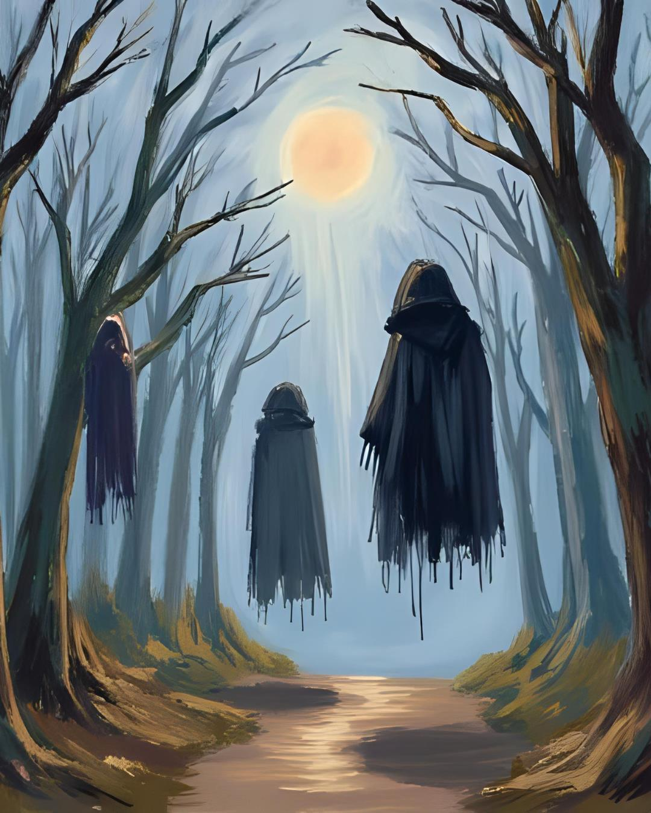
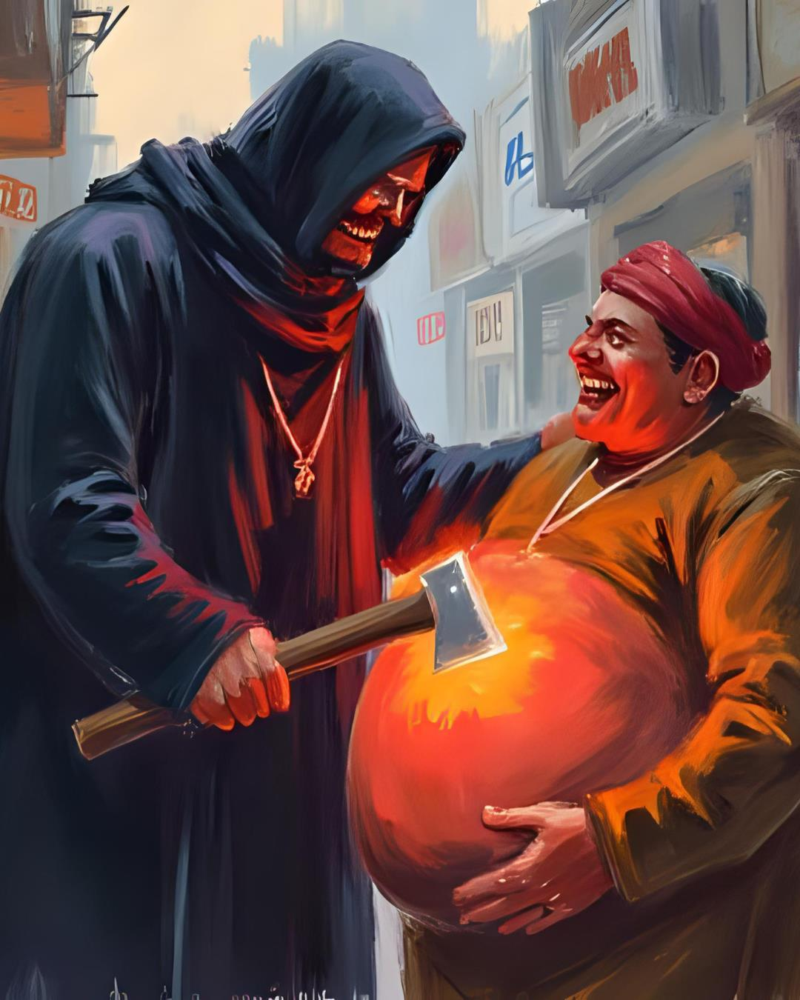
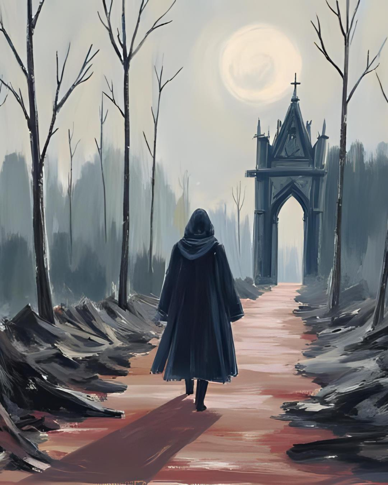
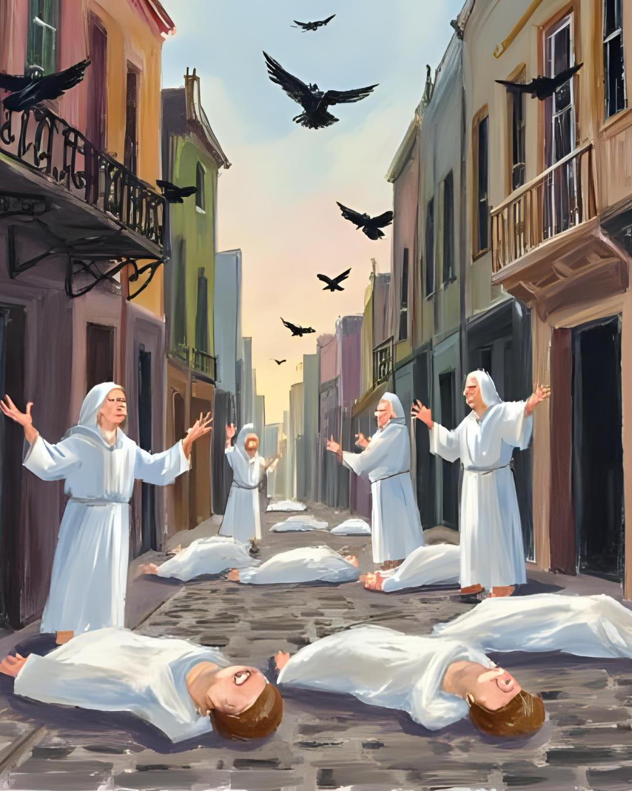
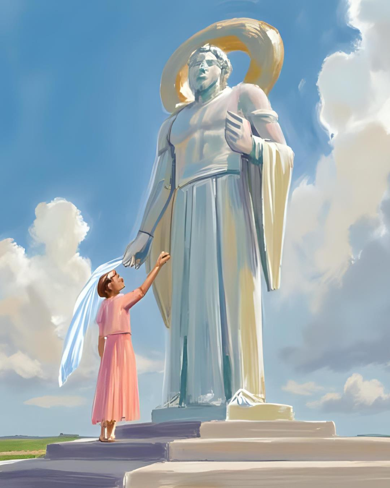
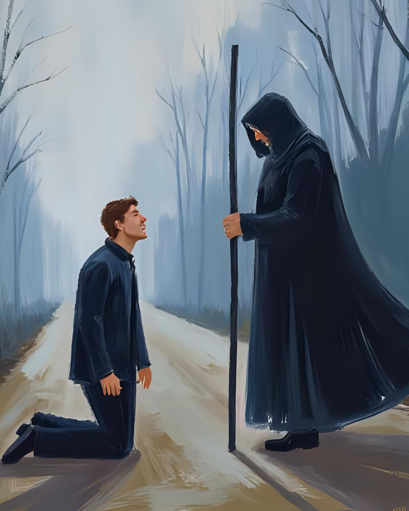
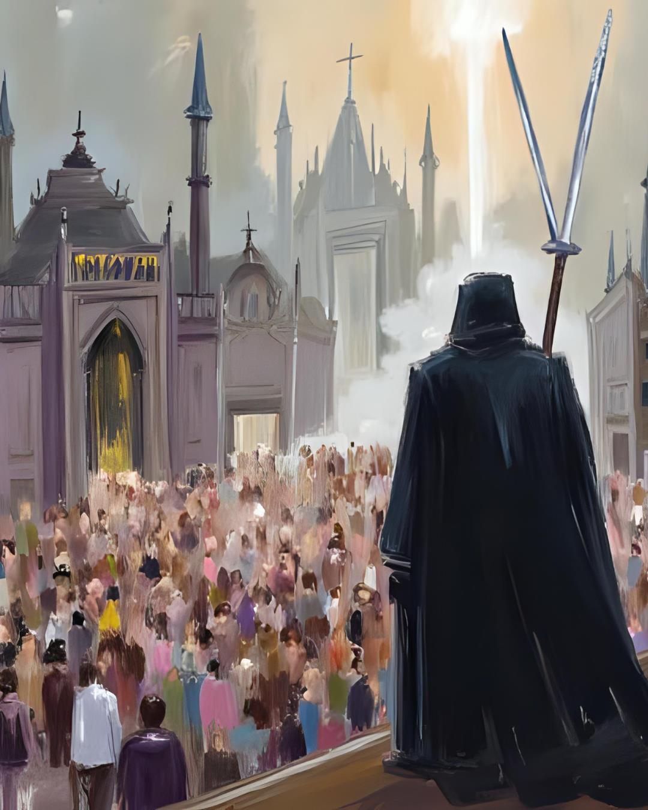
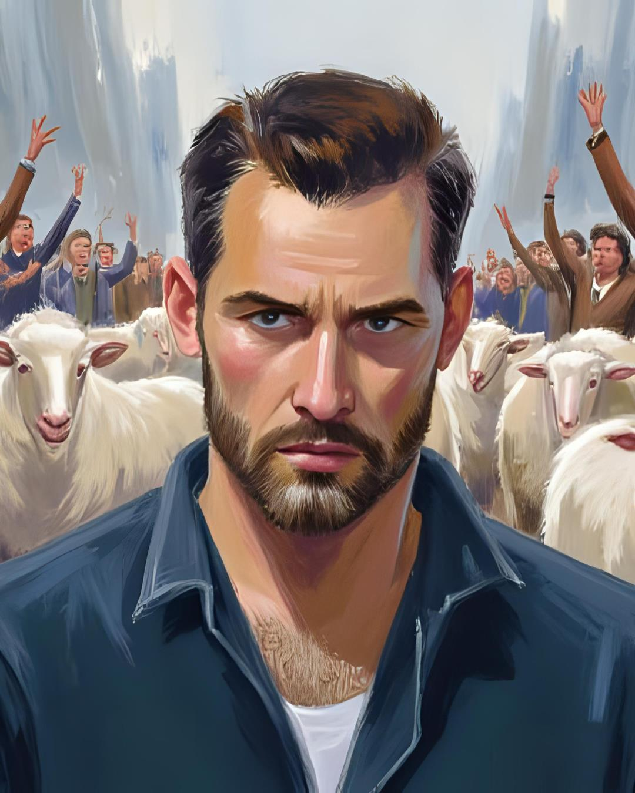
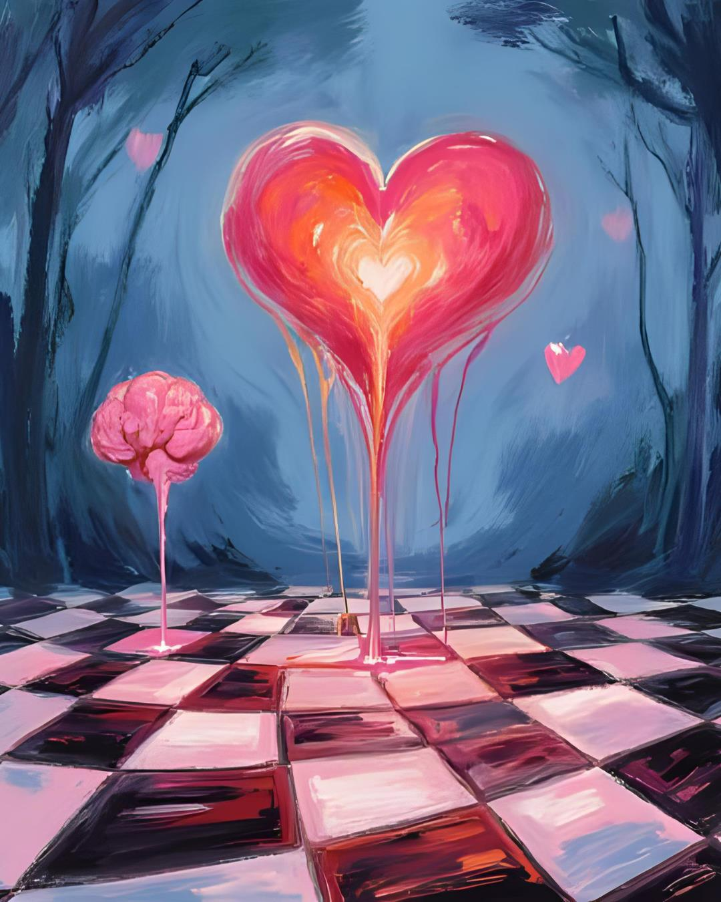

Pengantar [cite: 139]
Setahun telah berlalu sejak "Gebrakan" mengguncang peradaban. Dunia Seika hancur lebur. [cite_start]Harapan telah menjadi artefakkuno, dan kewarasan adalah barang langka. [cite: 140] [cite_start]Di tengah puing-puing, para pemuja Hypnus menemukan bentuk "kenikmatan" baru yang brutal, sementara Para Penjaga yang tersisa harus menempuh jalan mereka sendiri-sendiri, mencari makna dalam keheningan dan kehampaan. [cite: 141] [cite_start]Ini adalah era di mana kemunduran dianggap sebagai kemajuan, dan rasa sakit adalah bentuk kebahagiaan tertinggi. [cite: 142]
 [cite_start]Bab 9: Menutup Keterbukaan [cite: 143]
[cite_start]Dunia telah melebur dalam darah dan kekacauan. [cite: 144, 145, 146] [cite_start]Di reruntuhan Kota Keis, para pemuja Hypnus yang fanatik, dalam siklus interglasial yang repetitif, saling memasukkan pisau ke tenggorokan sebagai puncak ritual cinta mereka. [cite: 147, 148, 149, 150] [cite_start]Kematian adalah orgasme terakhir. [cite: 150]
Satu tahun mengubah segalanya. Kemunduran menjadi tolok ukur kemajuan baru. [cite_start]Para Penjaga tercerai-berai. [cite: 151] Banyak dari mereka yang tak sanggup menanggung beban ambiguitas baru, jiwa mereka membeku di tengah jalan, menjadi patung-patung tragis dari sebuah perjuangan yang gagal. [cite_start]Namun, ada yang lebih dari itu. [cite: 152, 153]
[cite_start]Hutan hijau semu yang dulu menjadi tempat perlindungan kini mengalami penuaan. [cite: 154] [cite_start]Debu-debu kepahitan yang jujur, yang tak lagi dibersihkan, telah meracuni tanah, membuat daun-daun layu dan dahan-dahan rapuh. [cite: 155] [cite_start]Di jantung hutan itu, di sebuah kuil yang terlupakan, jubah-jubah hitam milik para Penjaga yang telah menyerah atau mati tersimpan. [cite: 156] [cite_start]Tergantung rapi, dikelilingi oleh cahaya pucat yang aneh-cahaya kebenaran yang kini tak memiliki siapa pun untuk meneranginya. [cite: 157]
 [cite_start]Bab 10: Rokok dan Teh Hangat [cite: 158]
[cite_start]Di sebuah pasar darurat yang berdiri di atas puing-puing, seorang Penjaga yang masih bertahan, yang wajahnya telah menua melampaui usianya, berjalan dengan langkah mantap. la adalah Kael, namun bukan lagi Kael yang sama. [cite: 159, 160, 161, 162, 163, 164, 165, 166, 167, 168] [cite_start]Matanya kosong, tetapi menyimpan percik api yang berbeda. la berhenti di depan sebuah kios kumuh milik seorang pedagang berperut buncit. [cite: 169, 170, 171, 172, 173]
[cite_start]"Saya memesan sebungkus rokok dan teh!" teriak Kael, suaranya serak dan tegas. [cite: 174, 175, 176, 177]
[cite_start]Wajah pedagang itu berseri-seri. [cite: 178] [cite_start]Ini adalah momen yang ia tunggu. [cite: 179] [cite_start]Dengan senyum lebar yang mengerikan, ia menyodorkan kapak menyala yang tergantung di sampingnya ke arah Kael. [cite: 180] [cite_start]"Silakan, wahai manusia unggul! Inilah daganganku!" seru si pedagang dengan penuh kebahagiaan. [cite: 181] [cite_start]"Robek perut buncit saya ini! Ambillah apa yang Anda butuhkan!" [cite: 182]
Kael mengambil kapak itu tanpa ragu. [cite_start]Dengan satu ayunan, ia membuka perut si pedagang. [cite: 183] [cite_start]Darah segar menyembur, mewarnai suasana hati keduanya dengan warna merah kebahagiaan. [cite: 184] [cite_start]Rasa sakit yang luar biasa terpancar di wajah pedagang itu, namun matanya memancarkan ekstasi murni. [cite: 185]
[cite_start]Dari dalam perut yang terbelah, Kael mengambil sebungkus rokok dan sekantong daun teh kering. [cite: 186] [cite_start]Tangannya, yang terasa panas oleh energi aneh, membakar ujung rokok itu seketika. la menghisapnya dalam-dalam, sebuah kenikmatan getir yang sempurna. [cite: 187]
Pedagang itu ambruk, nafasnya tersengal. [cite_start]"Terima... kasih..., wahai saudaraku," bisiknya sebelum mati. [cite: 188] Kael menatap mayat itu, ekspresinya menunjukkan kesedihan yang bercampur dengan kesenangan yang aneh. [cite_start]"Sama-sama," jawabnya pelan. [cite: 189]
 [cite_start]Bab 11: Terikat Rantai [cite: 190]
[cite_start]Kael berjalan menjauh, meninggalkan pasar yang gila itu. [cite: 191, 192, 193] [cite_start]Dalam benaknya, ia berbicara pada dirinya sendiri, pada hantu-hantu masa lalunya. [cite: 194, 195] [cite_start]"Kutinggalkan rumah yang roboh itu," pikirnya, mengingat markas Para Penjaga yang kini hanya tinggal kenangan. [cite: 196] [cite_start]"Sangat sulit memang, membuang kunci yang pernah menjadi dunia nyaman. Kunci dari keterjagaan dan penderitaan yang kukira kupahami." [cite: 197]
la menatap tangannya yang membara sesaat. [cite_start]"Apa daya, alam semesta memberiku peringatan. Ia membakar seluruh tubuhku yang rapuh dengan kenyataan baru. Tidak ada jalan lain. Alam terus-menerus menyerangku tanpa ampun. Sadis! [cite: 198, 199] Tapi ada yang lebih dari itu. Tempatku berlindung telah menjadi abu. [cite_start]Aku telah kalah." [cite: 200]
Kini, hutan hening yang sekarat itu menjadi satu-satunya wahananya. [cite_start]Satu-satunya tempat yang menawarkan ketenangan dalam kehampaan absolut. [cite: 201]
 [cite_start]Bab 12: Festival Mayat yang Bahagia [cite: 202]
Di jalanan utama bekas Kota Keis, pemandangan sureal terhampar. [cite_start]Sekumpulan mayat bergelimpangan dengan senyum beku di wajah mereka, sebuah manifestasi depopulasi yang artistik. [cite: 203] [cite_start]Ironisnya, burung-burung berkicau riang, dan matahari bersinar cerah, menyoroti tipuan kebahagiaan yang berdansa di atas kematian. [cite: 204]
[cite_start]Tiba-tiba, ratusan pisau tak terlihat seakan menusuk udara, menghujam jiwa dan raga orang-orang yang masih hidup. [cite: 205, 206, 207, 208, 209] Penderitaan yang begitu hebat, menyengat logika hingga lumpuh. [cite_start]Burung-burung gagak berdatangan, suara mereka yang parau menyuarakan kebenaran yang tak ingin didengar siapa pun. [cite: 210, 211]
[cite_start]Di tengahnya, sekelompok pemuja Hypnus yang baru, dengan pakaian rapi, mencoba melemparkan "gula surgawi"-kristal berkilauan-ke arah mayat dan orang-orang yang sekarat, berupaya menjaga fasad kebahagiaan. [cite: 212] [cite_start]Semua orang tersenyum, diiringi gemuruh detak jantung yang menggoda sebelum akhirnya berhenti. [cite: 213] Rasa telah menjadi asa. [cite_start]Manusia telah binasa, dengan busa kebahagiaan keluar dari mulutnya. [cite: 214]
 [cite_start]Bab 13: Titan Logika-Mistika [cite: 215]
[cite_start]Jauh dari kekacauan itu, ada sebuah anomali: Desa Isuli. [cite: 216, 217] Tempat ini adalah pusat peradaban baru para pemuja Hypnus. Di sini, mayat, teknologi canggih, dan uang menjadi baju sehari-hari. [cite_start]Desa ini bersih, teratur, dan makmur. [cite: 218, 219, 220, 221, 222, 223]
Setiap hari, seekor domba baru dibawa ke desa. Seekor domba yang lugu dan polos. [cite_start]Seperti biasa, domba itu tidak menunjukkan penyesalan atau ketakutan. [cite: 224, 225, 226] [cite_start]Dalam satu hari, ia terpengaruh secara halus oleh aura "cinta" di desa itu. [cite: 227]
Di tengah desa, sebuah patung Hypnus yang menjulang tinggi menjadi sentral persembahan. [cite_start]Hari ini, seekor domba baru dipersembahkan di hadapan patung itu. [cite: 228, 229] [cite_start]Sosok Hypnus sendiri bermanifestasi di sana, anggun dan memesona. [cite: 230]
"Oh, wahai domba tersayang!" suara Hypnus bergema, penuh kelembutan. [cite_start]"Sediakah kamu untuk menerima cinta abadi dariku?" [cite: 231]
Domba itu menunduk pasrah. [cite_start]Hypnus tersenyum dan memasangkan sebuah selendang tipis, sebuah "hijab" simbolis, di kepala domba itu. [cite: 232] "Kau telah menjadi bagian dariku," bisik Hypnus. [cite_start]"Sekarang, bercintalah denganku, dengan kami semua, hingga kau puas!" [cite: 233]
 [cite_start]Bab 14: Senyuman Derita [cite: 234]
Di jalanan sepi menuju Desa Isuli, kabut tebal bertarung dengan debu. [cite_start]Kael melihat seorang lelaki menangis histeris di pinggir jalan. [cite: 235, 236, 237, 238, 239] [cite_start]"Domba saya! Domba kesayangan saya hilang!" raungnya putus asa. [cite: 240, 241, 242, 243, 244, 245, 246]
[cite_start]Kael berlari menghampirinya. [cite: 247] la menatap lelaki malang itu dengan mata yang sayu dan kosong. Tanpa berkata-kata, ia menyodorkan sebilah pisau kecil. [cite_start]"Goreskan pisau ini ke tanganmu. Percaya padaku." [cite: 248, 249, 250]
Lelaki itu kebingungan, namun ada sesuatu dalam tatapan Kael-aura pembawa kebenaran-yang membuatnya patuh. la menggores telapak tangannya. [cite_start]Darah menetes, dan dari darah itu, muncul cahaya lembut yang menyilaukan. [cite: 251, 252]
[cite_start]"Wahai, manusia unggul! Mengapa kau menyiksaku?" tanya lelaki itu, namun air matanya kini adalah air mata kebahagiaan yang aneh. [cite: 253] [cite_start]Rasa sakit itu terasa... murni. [cite: 254]
"Saudaraku," jawab Kael dengan suara datar. [cite_start]"Tidakkah terlihat bahwa selama ini dirimu bahagia oleh domba itu, namun jiwamu dipenuhi lukisan palsu ciptaan Hypnus? Kau mencintai ilusi ketergantungan." [cite: 255]
[cite_start]Sebelum lelaki itu sempat menjawab, Kael mengeluarkan sebatang besi panjang dari balik jubahnya dan memukul kepala lelaki itu dengan brutal. [cite: 256] [cite_start]Pukulan demi pukulan mendarat. [cite: 257] "Ini adalah karunia terbaik bagimu!" teriak Kael. [cite_start]"Penderitaan untuk menghapus lukisan palsumu!". [cite: 258, 259]
 [cite_start]Bab 15: Bisu [cite: 260]
[cite_start]Tiba-tiba, langit terbelah. [cite: 261, 262] Hypnus sendiri terjun dari surga ke dunia Seika, mendarat di Desa Isuli. Warna-warni kebahagiaan meledak di sekelilingnya. [cite_start]Sebuah lukisan megah nan besar-karya lanjutan dari peradaban barunya terpampang di belakangnya. [cite: 263, 264, 265, 266, 267, 268, 269, 270]
[cite_start]Kael, yang kini berdiri bersama lelaki yang babak belur namun tercerahkan itu, tidak panik. la yang sesungguhnya. [cite: 271, 272, 273, 274] sangat tenang. [cite_start]Jubah hitam yang pernah ia tinggalkan seakan muncul dari udara dan kembali menyelimuti tubuhnya, sebuah baju pertahanan dari kewarasan yang sesungguhnya. [cite: 275, 276, 277]
[cite_start]"Lihatlah! Aku telah memberikanmu hidangan kembali, wahai pengikut setiaku!" teriak Hypnus dengan karisma yang memabukkan. [cite: 278] Para penduduk Desa Isuli bersorak kegirangan. [cite_start]Mereka menelanjangi diri dan saling bercinta satu sama lain di depan raja mereka, sebuah teatrikal dermawan yang biadab. [cite: 279]
Kael melihat dari kejauhan, sendirian dalam kerumunan. [cite_start]Memperhatikan kebodohan massal itu. [cite: 280] [cite_start]Dari punggungnya, bilah-bilah pisau tajam muncul perlahan, bersiap untuk mengayunkan sebuah karya destruktif yang produktif. [cite: 281] [cite_start]Ini adalah keberanian baru yang adaptif. [cite: 282]
 [cite_start]Bab 16: Tuli [cite: 283]
Kael menarik lelaki malang itu, yang kita sebut Elian, lebih dekat ke Desa Isuli. [cite_start]"Kau harus menyaksikan ini dengan matamu sendiri," bisik Kael. [cite: 284, 285, 286, 287, 288]
[cite_start]Di tengah pesta pora, Elian melihatnya. [cite: 289, 290] Domba kesayangannya. Domba yang telah ia rawat selama empat tahun. Kini, mulut domba itu disumpal gula pasir, matanya kosong, dan tubuhnya yang kotor sedang diperkosa bergantian oleh para pemuja Hypnus. [cite_start]Telinganya telah menjadi tuli; [cite: 291, 292, 293, 294, 295] ia tidak mendengar apa pun selain bisikan para pemuja. [cite_start]Akalnya telah dihancurkan. [cite: 296, 297]
Elian tidak berkata apa-apa. la hanya menatap kosong. [cite_start]Empat tahun cintanya hilang dalam sekejap. [cite: 298] [cite_start]Rantai kebencian yang dingin mulai mengikat kedua tangannya. [cite: 299]
[cite_start]"Saya bingung! Sangat bingung sekali!" akhirnya Elian berteriak, suaranya buas. [cite: 300] [cite_start]"Bagaimana mungkin ia bisa dengan mudahnya terkena pengaruh para pemuja dangkal itu?" [cite: 301]
[cite_start]"Pengaruh masyarakat itu sangatlah kuat, saudaraku," jawab Kael dengan percaya diri. [cite: 302] [cite_start]"Namun satu hal yang perlu kau ketahui: mereka itu sudah tidak bisa berpikir dengan jernih lagi. Mereka tuli." [cite: 303]
[cite_start]Angin malam yang dingin bertiup, menidurkan Kael dan Elian yang kelelahan secara emosional. [cite: 304]
 [cite_start]Bab 17: Optimisme Bias [cite: 305]
Saat mereka tertidur, realitas di sekitar mereka seakan melengkung. Sebuah optimisme bias yang mendistorsi persepsi telah mendorong dunia ekologis ke dalam jurang. Anatomi logika mengalami deflasi; supremasi absolut kini dipegang oleh suasana hati. [cite_start]Ini adalah sebuah dikotomi yang hanya bisa diobservasi oleh para kritikus sunyi seperti Kael. [cite: 306, 307, 308, 309, 310, 311, 312, 313, 314, 315, 316]
Pesimisme-bukan sebagai keputusasaan, tetapi sebagai alat-mengorbit secara kontinu di benak Kael, berupaya menyadarkan tentang keterbalikan moralitas yang terjadi. [cite_start]Ini adalah desentralisasi kesadaran yang dibalut oleh ideologi sentralisasi Hypnus. [cite: 317, 318, 319, 320, 321, 322, 323]
Dalam tidurnya, Kael memahami sebuah kebenaran baru. [cite_start]Civitas kosmos-masyarakat semesta yang sejati-hanya akan bisa digapai oleh satu golongan. [cite: 324] Bukan golongan pemuja, bukan pula golongan pejuang. [cite_start]Melainkan golongan kesadaran, keterjagaan, kecemasan, keheningan, dan kehampaan. [cite: 325]
 [cite_start]Bab 18: Tubuh yang Dingin [cite: 326]
[cite_start]Hypnus muncul dari keramaian pesta dan mendekati sudut desa tempat Kael dan Elian tertidur. [cite: 326] [cite_start]Dengan kekuatannya, ia mengangkat tubuh mereka yang lelap. [cite: 327, 328] "Manusia unggul," bisik Hypnus, menatap wajah Kael. [cite_start]"Derita apa yang sebenarnya kau perjuangkan?" [cite: 329, 330, 331, 332, 333]
Tidak ada respon. Hypnus menarik pedang panjang yang tajam dan berkilauan, lalu menusuk tepat ke jantung Kael dan Elian. Anehnya, tubuh mereka tidak bergerak, tidak mengeluarkan darah. [cite_start]Secara fisik mereka telah ditembus, namun Hypnus tidak mengetahui bahwa batin mereka selalu tersadar, terlindungi dalam kehampaan. [cite: 334, 335, 336, 337, 338]
[cite_start]"Kau berdua telah melanggar pedoman komunitas yang telah terbentuk!" seru Hypnus, amarahnya dingin dan terkendali. [cite: 339] [cite_start]la berbalik dan mengangkat domba malang itu ke atas panggung megah, dikelilingi lukisan ilusi. [cite: 340] [cite_start]Sang domba, yang kini sepenuhnya milik Hypnus, menyerahkan tubuhnya dengan bahagia. [cite: 341]
Namun, sesuatu yang lain terjadi. [cite_start]Dari berbagai penjuru kota Seika yang hancur, ratusan pedang tua yang terlantar dan berdebu bangkit dari tanah. [cite: 342] Mereka terbang, berbondong-bondong menuju Desa Isuli. [cite_start]Mereka berhenti di udara, mengelilingi desa itu, dan serempak bersuara dengan gema logam: [cite: 343]
[cite_start]"HYPNUS, DI AKHIR MASA, KAU DENGAN PENGIKUTMU AKAN MENGETAHUI KEBENARAN YANG NYATA!" [cite: 344, 345]
Sang raja tertawa terbahak-bahak. [cite_start]"Ya, memang! Aku telah mengetahui akhir dari masa kalian. Namun untuk saat ini, biarkan pemujaku menikmati surga mereka!" [cite: 346]
Sinar matahari menjadi sangat terik. [cite_start]Tanpa sepatah kata, Hypnus memerintahkan para pemujanya. [cite: 347] [cite_start]Mata mereka semua berubah menjadi putih susu, membutakan akal dan kesadaran mereka dari apa pun selain perintahnya. [cite: 348] [cite_start]Mereka membentuk barikade hidup, menutup semua akses masuk bagi para Penjaga atau kebenaran apa pun yang mungkin datang. [cite: 349] [cite_start]Perang terakhir akan segera dimulai. [cite: 350]